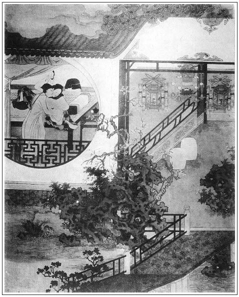

張回宋御史送一百本歷日來，亦平平一事，不知皆作者如椽之筆寫之也。蓋言一百回文字，至下一回，將寫其吃緊示人處也。財色二字，至下一回討結果也。況一百本歷日，言百年有限，人且斷送於酒色財氣之內也。故用宋喬年送來。又瓶兒一百日後，是西門死期，言瓶之罄矣，不能苟延也。
篇內窗梅表月，簷雪滾風，蓋一總後文春梅、月娘、雪娥等事也。豈泛泛寫景？
又找葉五兒一段，點明花殘葉落之故也。
再戰林太太，卻先寫葉五兒，言敗葉辭林，春光去定。而林太太之再戰，其報金蓮出身之處，已可為盡情，故用自此一段後，歇手寫西門死也。
如意兒莖露獨嘗，蓋於金蓮文中，又找足瓶兒也。如意兒夫家姓熊，娘家姓章。夫熊有膽者也，蓋如意兒乃瓶中一膽，故名如意；而姓章，猶言瓶膽一張。又膽瓶春水浸梅花，故莖露獨嘗也。夫瓶已失矣，止存其膽，因膽而想其瓶，是結此瓶一段公案。
至東京來，兩寫宿雪娥房中，總言雪後梅花發而蓮花老，總是金蓮文字。
伯爵妻姓杜，希大妻姓劉。杜者，肚也：劉者，留也。可想偶及之，附志於此，蓋白嚼入肚，攜帶想留客也。
熊旺妙，熊之所旺者膽也。
雲月結親，是晦暗景象，是空濛景象，與上文雪月空林，是冷清景象，是凋零景象。
寫玳安與賁四嫂通，是言玳安兒為月娘葉落歸根，伏西門小員外之線，又蝶藏葉下，已無花也。
此處寫金蓮之不孝，又找磨鏡一回，總是作者為世之為人子者，痛哭流涕，告說人老待子而生活，斷不可我圖快樂，置吾年老之親於不問也。恐人不依，是用借潘姥姥數段，告如意兒等，言為人之有親者，刺骨言之。苟有人心，誰能不眼淚盈把，我亦不能逐節細批。蓋讀此等文，不知何故，雙眼惟有淚出，不能再看文字矣。讀過一遍，一月兩月，心中忽忽不樂，不能釋然。至於寫金蓮之一味要說人，便不顧其母，於春梅口中映出之，以及後文令其母回去，總是寫其與月娘不復合，以至出門到武二家也。
夢簪折而瓶兒死，夢衣破而西門死，遙遙相映。
玉簫送簪物與來爵女人，特結蕙蓮之案，卻是結玉簫之事。蓋簫至黃鸝聲咽，亦再不能作一曲斷續之調也。
忽又寫一藍氏，也是太監侄兒之妻也，有錢，儼然又一瓶兒。蓋花籃亦可載花，花瓶亦可載花，而無如籃在何家。何者，河也，竹籃打水，到底成空，總是一番虛景。
金蓮，惡之尤者也，看他止寫其不孝；普淨，善之尤者也，看他止寫其化眾人以孝。故作者是孝子不待言，而人誰能不孝以行他善哉！
此回特特提筆寫一重和元年正月初一，為上下一部大手眼，故極力描寫諸色人等一番也。
王三官娘子與藍氏，同一影子中人，乃黃氏寫在藍氏前，今反是藍氏來，而黃氏不一出見，此是作者異樣躲滑處。蓋黃氏與藍氏一齊都來，不能一齊實寫；使一齊實寫，皆雲二十分齊整，匪特文字礙手，即看者亦如神案前成對爐瓶，味如嚼臘矣。看他止用二十分精采寫藍氏。便使一杳然不出之三官娘子，真如海外三山，令人神往，真是寫一是二，又有一手雙寫之妙。
詞曰：
鳳髻金泥帶，龍紋玉掌梳。去來窗下笑來扶，愛道畫眉深淺入時無？
弄筆偎人久，描花試手初。等閒含笑問狂夫，笑問歡情不減舊時麼？

話說西門慶陪大舅飲酒，至晚回家。到次日，荊都監早辰騎馬來拜謝，說道：「昨日見旨意下來，下官不勝歡喜，足見老翁愛厚，費心之至，實為銜結難忘。」說畢，茶湯兩換，荊都監起身，因問：「雲大人到幾時請俺們吃酒？」西門慶道：「近節這兩日也是請不成，直到正月間罷了。」送至大門，上馬而去。西門慶宰了一口鮮豬，兩壇浙江酒，一疋大紅絨金豸員領，一疋黑青妝花紵絲員領，一百果餡金餅，謝宋御史。就差春鴻拿帖兒，送到察院去。門吏人報進去，宋御史喚至後廳火房內，賞茶吃。等寫了回帖，又賞了春鴻三錢銀子。來見西門慶，拆開觀看，上寫著：
兩次造擾華府，悚愧殊甚。今又辱承厚貺，何以克當？外令親荊子事，已具本矣，相已知悉。連日渴仰丰標，容當面悉。使旋謹謝。侍生宋喬年拜大錦衣西門先生大人門下。
宋御史隨即差人，送了一百本歷日，張夾又是一百本。總言來日雖多，無益於事也。四萬紙，一口豬來回禮。
一日，上司行下文書來，令吳大舅本衛到任管事。西門慶拜去，就與吳大舅三十兩銀子，四疋京段，交他上下使用。到二十四日，封了印來家，又備羊酒花紅軸文，邀請親朋，等吳大舅從衛中上任回來，迎接到家，擺大酒席與他作賀。又是何千戶東京家眷到了，西門慶寫月娘名字，送茶過去。到二十六日，玉皇廟吳道官十二個道眾，在家與李瓶兒念百日經，整做法事，張夾百日矣。自瓶兒至此，俱細細寫來，一日不紊。大吹大打，各親朋都來送茶，請吃齋供，至晚方散，俱不在言表。
至廿七日，西門慶打發各家送禮，應伯爵、謝希大、常峙節、傅夥計、甘夥計、韓道國、賁第傳、崔本，每家半口豬，半腔羊，一罈酒，二包米，一兩銀子，院中李桂姐、吳銀兒、鄭愛月兒，每人一套衣服，三兩銀子。繡眉如此財主，盡自不俗。張夾西門送禮是一類人，月娘送禮又是一類人。看他寫得二人不堪之甚。吳月娘又與庵裡薛姑子打齋，令來安兒送香油、米面、銀錢去，不在言表。看看到年除之日，穿梅表月，簷雪滾風，繡旁幽致。張夾看者試問，其八字豈寫景乎？道盡後文也。竹爆千門萬戶，家家貼春勝，處處掛桃符。西門慶燒了紙，又到於李瓶兒房，靈前祭奠。祭畢，置酒於後堂，閤家大小歡樂。手下家人小廝並丫頭媳婦，都來磕頭。西門慶與吳月娘，俱有手帕、汗巾、銀錢賞賜。
到次日，重和元年新正月元旦，張夾所云重和，蓋深幸天地重明，靈和復震也。西門慶早起冠冕，穿大紅，天地上燒了紙，吃了點心，備馬就拜巡按賀節去了。月娘與眾婦人早起來，施朱傅粉，插花插翠，錦裙繡襖，羅襪弓鞋，妝點妖嬈，打扮可喜，張夾極力一描，為死期引也。都來月娘房裡行禮。那平安兒與該日節級在門首接拜帖，上門簿，答應往來官長士夫。玳安與王經穿著新衣裳，新靴新帽，在門首踢毽子，放炮仗，磕瓜子兒。張夾逼肖。眾夥計主管，伺候見節者，不計其數，都是陳敬濟一人管待。繡眉畫出新年光景。張夾固為孝哥一哭。約晌午，西門慶往府縣拜了人回來，剛下馬，招宣府王三官兒衣巾著來拜。張眉看他欲寫西門一死，必先將眾人一總。夫眾人如何便捏攏一塊？看他止用過節一映，要使諸人外面於兄弟與諸夥計，內而六房諸婢、家人、僕婦，凡以上七十八回內，用意寫來人物，一一皆出，真是文字能手，而極力一描其熱，下轉筆其冷淡，便真有二十分掩映。到廳上拜了西門慶四雙八拜，張夾假子拜節，又為孝哥一哭。然後請吳月娘見。西門慶請到後邊，與月娘見了，出來前廳留坐。才拿起酒來吃了一盞，只見何千戶來拜。西門慶就叫陳敬濟管待陪王三官兒，張夾真女婿陪假兒。他便往卷棚內陪何千戶坐去了。王三官吃了一回，告辭起身。陳敬濟送出大門，上馬而去。落後又是荊都監、雲指揮、喬大戶，皆絡繹而至。西門慶待了一日人，已酒帶半酣，至晚打發人去了，回到上房歇了一夜。到次早，又出去賀節，至晚歸來，家中已有韓姨夫、應伯爵、謝希大、常峙節、花子由來拜。陳敬濟陪在廳上坐的。西門慶到了，見畢禮，重新擺上酒來飲酒。韓姨夫與花子由隔門，先去了。剩下伯爵、希大、常峙節，坐個定光油兒不去。繡旁常態，也不足多怪。又撞見吳二舅來了，見了禮，又往後邊拜見月娘，出來一處坐的。直吃到掌燈已後方散。
西門慶已吃的酩酊大醉，送出伯爵，等到門首眾人去了。西門慶見玳安在旁站立，捏了一把手。玳安就知其意，說道：「他屋裡沒人。」這西門慶就撞入他房內。老婆早已在門裡迎接進去。繡眉賁四嫂與王六兒一般夥計娘子，而巧拙遂分厚薄。兩個也無閒話，走到裡間，脫衣解帶就幹起來。原來老婆好並著腿干，兩隻手𢵞著，只教西門慶攮他心子。那浪水熱熱一陣流出來，把床褥皆濕。西門慶龜頭蘸了藥，攮進去，兩手扳著腰，只顧揉搓，麈柄盡入至根，不容毫髮，張夾比白綾帶何如？婦人瞪目，張夾瞪目者，叫不出也。口中只叫「親爺」。張夾「只叫」，言叫不出，惟叫此也。那西門慶問他：「你小名叫甚麼？說與我。」老婆道：「奴娘家姓葉，張夾然則綠肥紅瘦也。排行五姐。」西門慶口中喃喃吶吶，就叫葉「五兒」不絕。那老婆原是奶子出身，張夾又是如意同類。與賁四私通，被拐出來，張夾私通二字，雙關名意。占為妻子。今年三十二歲，甚麼事兒不知道！口裡如流水連叫「親爺」不絕，情濃一洩如注。西門慶扯出麈柄要抹，婦人攔住：「休抹，等淫婦下去，替你吮淨了罷。」張夾又進金蓮一層。西門慶滿心歡喜，婦人真個蹲下身子，雙手捧定那話，吮咂得乾乾淨淨，才繫上褲子。張夾又勝吃溺。因問西門慶：「他怎的去恁些時不來？」西門慶道：「我這裡也盼他哩。只怕京中你夏老爹留住他使。」又與了老婆二、三兩銀子盤纏，因說：「我待與你一套衣服，恐賁四知道不好意思。不如與你些銀子兒，你自家治買罷。」開門送出來。玳安又早在鋪子裡掩門等候。西門慶便往後邊去了。
看官聽說，自古上樑不正則下樑歪，原來賁四老婆先與玳安有奸，這玳安剛打發西門慶進去了，因傅夥計又沒在鋪子裡上宿，他與平安兒打了兩大壺酒，就在老婆屋裡吃到有二更時分，平安在鋪子裡歇了，他就和老婆在屋裡睡了一宿。有這等的事！張夾蝶使有歸宿矣。詩云「雨後全無葉底花，蜂蝶紛紛過牆去」也。正是：
滿眼風流滿眼迷，殘花何事濫如泥？
拾琴暫息商陵操，惹得山禽繞樹啼。
卻說賁四老婆晚夕同玳安睡了，因對他說：「我一時依了爹，只怕隔壁韓嫂兒傳嚷的後邊知道，也似韓夥計娘子，一時被你娘們說上幾句，羞人答答的，怎好相見？」玳安道：「如今家中，除了俺大娘和五娘不言語，別的不打緊。俺大娘倒也罷了，只是五娘快出尖兒。你依我，節間買些甚麼兒，進去孝順俺大娘。別的不稀罕，他平昔好吃蒸酥，你買一錢銀子果餡蒸酥、一盒好大壯瓜子送進去。這初九日是俺五娘生日，你再送些禮去，梯己再送一盒瓜子與俺五娘。管情就掩住許多口嘴。」繡眉金蓮於財、色二者，無所不愛，然亦有以其不甚愛而愛其所最愛者。色不可自主，而財則亦其樂得也。張夾是蝶使作用。這賁四老婆真個依著玳安之言，第二日趕西門慶不在家，玳安就替他買了盒子，掇進月娘房中。月娘便道：「是那裡的？」玳安道：「是賁四嫂子送與娘吃的。」月娘道：「他男子漢又不在家，那討個錢來，又交他費心。」連忙收了，又回出一盒饅頭，一盒果子，說：「上覆他，多謝了。」張夾金蓮處虛寫。
那日西門慶拜人回家，早又玉皇廟吳道官來拜，在廳上留坐吃酒。剛打發吳道官去了，西門慶脫了衣服，使玳安：「你騎了馬，問聲文嫂兒去：『俺爹今日要來拜拜太太。』看他怎的說？」玳安道：「爹，不消去，頭裡文嫂兒騎著驢子打門首過去了。他說明日初四，王三官兒起身往東京，與六黃公公磕頭去了。張夾三去而六來，陽氣盡矣，故西門死也。又六為老陰，陰極變陽，猶小人敗，而君子將進也。太太說，交爹初六日過去見節，他那裡伺候。」西門慶便道：「他真個這等說來？」玳安道：「莫不小的敢說謊！」這西門慶就入後邊去了。
剛到上房坐下，忽來安兒來報：「大舅來了。」只見吳大舅冠冕著，束著金帶，進入後堂，先拜西門慶，說道：「我吳鎧多蒙姐夫抬舉看顧，又破費姐夫，多謝厚禮。昨日姐夫下降，我又不在家，失迎。今日敬來與姐夫磕個頭兒，恕我遲慢之罪。」說著，磕下頭去。西門慶慌忙頂頭相還，說道：「大舅恭喜，至親何必計較。」拜畢，月娘出來與他哥磕頭。慌的大舅忙還半禮，說道：「姐姐，兩禮兒罷，哥哥嫂嫂不識好歹，常來擾害你兩口兒。你哥老了，看顧看顧罷。」月娘道：「一時有不到處，望哥耽帶便了。」吳大舅道：「姐姐沒的說，累你兩口兒還少哩？」拜畢，西門慶留吳大舅坐，說道：「這咱晚了，料大舅也不拜人了，寬了衣裳，咱房裡坐罷。」不想孟玉樓與潘金蓮兩個都在屋裡，張夾情事宛然。聽見嚷吳大舅進來，連忙走出來，與大舅磕頭。磕了頭，逕往各人房裡去了。西門慶讓大舅房內坐的，騎火盆安放桌兒，張夾情事宛然。擺上菜兒來。小玉、玉簫都來與大舅磕頭。月娘用小金鑲鍾兒，斟酒遞與大舅，西門慶主位相陪。吳大舅讓道：「姐姐你也來坐的。」月娘道：「我就來。」又往裡間房內，拿出數樣配酒的果菜來。飲酒之間，張夾此處將大舅極力一親密，下文方可用他主持諸事，不嫌唐突。西門慶便問：「大舅的公事都停當了？」吳大舅道：「蒙姐夫抬舉，衛中任便到了，上下人事，倒也都周給的七八。只有屯所裡未曾去到到任。明日是個好日期，衛中開了印，來家整理些盒子，須得抬到屯所裡到任，行牌拘將那屯頭來參見，分付分付。前官丁大人壞了事情，已被巡撫侯爺參劾去了。如今我接管承行，須要振刷在冊花戶，警勵屯頭，務要把這舊管新增開報明白，到明日秋糧夏稅，才好下屯徵收。」西門慶道：「通共約有多少屯田？」吳大舅道：「太祖舊例，為養兵省轉輸之勞，才立下這屯田。張夾祖宗立法，如此深心，乃為若輩侵漁之地，千古痛恨。那時只是上納秋糧，後吃宰相王安石立青苗法，增上這夏稅。張夾民命又為若輩試手，千古痛恨。而今濟州管內，除了拋荒、葦場、港隘，通共二萬七千頃屯地。每頃秋稅夏稅只徵收一兩八錢，不上五百兩銀子。到年終總傾銷了，往東平府交納，轉行招商，以備軍糧馬草作用。」西門慶又問：「還有羨餘之利？」吳大舅道：「雖故還有些拋零人戶不在冊者，鄉民頑滑，若十分征緊了，等秤觔斗重，恐聲口致起公論。」西門慶道：「若是多寡有些兒也罷，難道說全征？」吳大舅道：「不瞞姐夫說，若會管此屯，見一年也有百十兩銀子。到年終，人戶們還有些雞鵝豚米相送，那個是各人取覓，不在數內的。只是多賴姐夫力量扶持。」張夾一語找轉。西門慶道：「得勾你老人家攪給，也盡我一點之心。」說了回，月娘也走來旁邊陪坐，三人飲酒。到掌燈已後，吳大舅才起身去了。西門慶就在金蓮房中歇了一夜。到次日早往衙門中開印，升廳畫卯，發放公事。先是雲理守家發帖兒，初五日請西門慶併合衛官員吃慶官酒。張夾一路匆匆，決為結煞人寫歸路。次日，何千戶娘子藍氏下帖兒，初六日請月娘姊妹相會。
且說那日西門慶同應伯爵、吳大舅三人起身到雲理守家。原來旁邊又典了人家一所房子，三間客位內擺酒，叫了一起吹打鼓樂迎接，都有桌面，吃至晚夕來家。巴不到次日，張夾寫心事如畫。月娘往何千戶家吃酒去了。西門慶打選衣帽齊整，騎馬帶眼紗，玳安、琴童跟隨，午後時分，逕來王招宣府中拜節。王三官兒不在，送進帖兒去。文嫂兒又早在那裡，接了帖兒，連忙報與林太太說，出來，請老爺後邊坐。轉過大廳，到於後邊，掀起明簾，只見裡邊氍毹匝地，簾幙垂紅。張夾作者有何憤恨，而使其舊業掃地也。少頃，林氏穿著大紅通袖袍兒，珠翠盈頭，與西門慶見畢禮數，留坐待茶，分付：「大官，把馬牽於後槽餵養。」茶罷，讓西門慶寬衣房內坐，說道：「小兒從初四日往東京與他叔岳父六黃太尉磕頭去了，只過了元宵才來。」西門慶一面喚玳安，脫去上蓋，裡邊穿著白綾襖子，天青飛魚氅衣，十分綽耀。張夾生平得意之衣。婦人房裡安放桌席。須臾，丫鬟拿酒菜上來，杯盤羅列，餚饌堆盈，酒泛金波，茶烹玉蕊。婦人玉手傳杯，秋波送意，猜枚擲骰，笑語烘春。話良久，意洽情濃；飲多時，目邪心蕩。看看日落黃昏，又早高燒銀燭。玳安、琴童自有文嫂兒管待，張夾細。三官娘子另是一所屋裡居住，張夾細。自有丫環養娘服侍，等閒不過這邊來。婦人又倒扣角門，張夾此處仍找角門，何等深細。僮僕誰敢擅入。酒酣之際，兩人共入裡間房內，張夾裡間房。掀開繡帳，張夾先掀帳。關上窗戶，張夾後關窗。輕剔銀釭，張夾再剔燈。忙掩朱戶。張夾方掩門四句，情事妙絕。看他入裡間房內，已情不能禁，即掀開繡帳，因適間情事不堪，未曾洗牝，故又下床。則見窗猶未關，順手關窗。去剔殘燈，乃又想起未曾關門，於是關門洗牝，匆匆上床。而男子則先已解衣上床也。一時情景如畫。男子則解衣就寢，婦人即洗牝上床，枕設寶花，被翻紅浪。原來西門慶帶了淫器包兒來，安心要鏖戰這婆娘，早把胡僧藥用酒吃在腹中，那話上使著雙托子，在被窩中，架起婦人兩股，縱麈柄入牝中，舉腰展力，一陣掀騰鼓搗，連聲響亮。張夾是有心施整者。婦人在下，沒口叫親達達如流水。張夾「沒口」二字，從「在下」二字出，「在下沒口」四字，又在一陣「連聲」中出，而「連聲」又在「一陣」中出，「一陣」又在「舉腰展力」中出也。
正是：
照海旌幢秋色裡，擊天鼙鼓月明中。
但見：
錦屏前迷魂陣擺，繡幃下攝魂旗開，迷魂陣上，閃出一員酒金剛，色魔王，頭戴肉紅盔，錦兜鍪，身穿烏油甲，絳紅袍，纏觔縧，魚皮帶，沒縫靴，使一柄黑纓槍，帶的是虎眼鞭，皮包頭，流星槌，沒鞦箭，跨一匹捲毛凹眼渾紅馬，打一面覆雨翻雲大帥旗。攝魂旗下，擁一個粉骷髏、花狐狸，頭戴雙鳳翹、珠絡索，身穿索羅衫，翠裙腰，白練襠，凌波襪，鮫綃帶，鳳頭鞋；使一條隔天鞭，話絮刀，不得箭，淚偷錘，容瘦鐧，粉面撾，羅幃棒，騎一匹百媚千嬌玉面け，打一柄倒鳳顛鸞遮日傘。須臾，這陣上，撲鼕鼕鼓振春雷，那陣上，鬧挨挨麝蘭靉靆。這陣上，暖溶溶被翻紅浪；那陣上，刷剌剌帳控銀鉤。被翻紅浪精神健，帳控銀鉤情意乖，這一陣，急展展二十四解任徘徊；那一陣，忽剌剌一十八滾難掙扎。一個是慣使的紅錦套索鴛鴦扣，一個是好耍的拐子流星雞心槌。一個火忿忿桶子鎗，恨不的扎夠三千下，一個顫巍巍肉傍牌，巴不得搨夠五十回，這一個善貫甲披袍戰，那一個能奪精吸髓華。一個戰馬叭蹋蹋蹅翻歌舞地，一個征人軟濃濃塞滿密林崖；一個丑搊搜剛硬形骸，一個俊嬌嬈杏臉桃腮；一個施展他久戰熬場法，一個賣弄他鶯聲燕語諧；一個鬬良久汗浸浸釵橫鬢亂，一個戰多時喘吁吁枕欹裀歪。頃刻間，只覺這內襠縣乞砲打成堆，個個皆腫眉𦣘眼，霎時下，則望那莎草場被鎗扎到底，人人肉綻皮開。夾批（此處詞句來自萬曆詞話本。）
迷魂陣擺，攝魄旗開。迷魂陣上，閃出一員酒金剛，色魔王能爭慣戰；攝魂旗下，擁一個粉骷髏，花狐狸百媚千嬌。這陣上，撲鼕鼕，鼓震春雷；那陣上，鬧挨挨，麝蘭靉靆。這陣上，復溶溶，被翻紅浪精神健；那陣上，刷剌剌，帳控銀鉤情意乖。這一個急展展，二十四解任徘徊；那一個忽剌剌，一十八滾難掙扎。斗良久，汗浸浸，釵橫鬢亂；戰多時，喘吁吁，枕側衾歪。頃刻間，腫眉𦣘眼；霎時下，肉綻皮開。張夾一路用戰爭語，極力一丑招宣。又非如王六兒賦中殺語也。
正是：
幾番鏖戰貪淫婦，不是今番這一遭。
當下西門慶就在這婆娘心口與陰戶燒了兩炷香，許下明日家中擺酒，使人請他同三官兒娘子去看燈耍子。張夾意在三官娘子。這婦人一段身心已被他拴縛定了，於是滿口應承都去。西門慶滿心歡喜，起來與他留連痛飲，至二更時分，把馬從後門牽出，作別回家。正是：
盡日思君倚畫樓，相逢不捨又頻留。
劉郎莫謂桃花老，浪把輕紅逐水流。
西門慶到家，有平安攔門稟說：「今日有薛公公家差人送請帖兒，張夾接手是雪，林空可想。請爹早往門外皇莊看春。又是雲二叔家送了五個帖兒，請五位娘吃節酒。」西門慶聽了，進入月娘房來。只見孟玉樓、潘金蓮都在房內坐的。月娘從何千戶家赴了席來家，正坐著說話。見西門慶進來，連忙道了萬福。因問：「你今日往那裡，這咱才來？」西門慶沒得說，只說：「我在應二哥家留坐。」月娘便說起今日何千戶家酒席上事：「原來何千戶娘子年還小哩，今年才十八歲，生的燈上人兒也似，一表人物，好標緻，知今博古，見我去，恰似會了幾遍，好不喜洽。嫁了何大人二年光景，張夾又一瓶兒。房裡到使著四個丫頭，兩個養娘，兩房家人媳婦。」西門慶道：「他是內府生活所藍太監侄女兒，嫁與他陪了好少錢兒！」張夾又一瓶兒。月娘道：「明日雲夥計家，又請俺每吃節酒，送了五個帖兒來，端的去不去？」西門慶說：「他既請你每，都去走走罷。」月娘道：「留雪姐在家罷，只怕大節下，一時有個人客闖將來，他每沒處撾撓。」西門慶道：「也罷，留雪姐在家裡，張夾又是一雪。你每四個去罷。明日薛太監請我看春，我也懶待去。這兩日春氣發也怎的，只害這腰腿疼。」張旁漸漸寫來妙絕。月娘道：「你腰腿疼只怕是痰火，問任醫官討兩服藥吃不是，只顧挨著怎的？」西門慶道：「不妨事，由他。一發過了這兩日吃，心淨些。」因和月娘計較：「到明日燈節，咱少不的置席酒兒，請請何大人娘子。連周守備娘子，荊南崗娘子，張親家母，雲二哥娘子，連王三官兒母親，和大妗子、崔親家母，這幾位都會會。也只在十二三，掛起燈來。還叫王皇親家那起小廝扮戲耍一日。去年還有賁四在家，扎幾架煙火放，今年他東京去了，只顧不見來，卻教誰人看著扎？」那金蓮在旁插口道：「賁四去了，他娘子兒扎也是一般。」繡眉心痛病人，便一句說話吃不起。張夾尖極。不知如何出口，便是一字不差口氣，的是金蓮也。這西門慶就瞅了金蓮道：「這個小淫婦兒，三句話就說下道兒去了。」那月娘、玉樓也不採顧，就罷了。因說道：「那王三官兒娘，咱每與他沒會過，人生面不熟，怎麼好請他？只怕他也不肯來。」西門慶道：「他既認我做親，咱送個帖兒與他，來不來，隨他就是了。」月娘又道：「我明日不往雲家去罷，懷著個臨月身子，只管往人家撞來撞去的，交人家唇齒。」玉樓道：「怕怎的，你身子懷的又不顯，怕還不是這個月的孩子，不妨事。大節下自恁散心，去走走兒才好。」張夾又點孝哥。說畢，西門慶吃了茶，就往後邊孫雪娥房裡去了。張眉自林氏處來，進門卻是「雪」太監請，接手又入雪娥房中，二雪並至，其冷何如？見林空春老，一片蕭瑟景象，用意深細之極。那潘金蓮見他往雪娥房中去，叫了大姐，也就往前邊去了。西門慶到於雪娥房中，交他打腿捏身上，捏了半夜。繡眉吾惱如雪娥者，不得歡娛而反勞碌。一宿晚景題過。張夾又一到雪中去。夫雪娥房中，一去而瓶死，再去而西門死矣，須記清。
到次日早辰，只見應伯爵走來，對西門慶說：「昨日雲二嫂送了個帖兒，今日請房下陪眾嫂子坐。家中舊時有幾件衣服兒，都倒塌了。大正月不穿件好衣服，惹的人家笑話。敢來上覆嫂子，有上蓋衣服，借約兩套兒，頭面簪環，借約幾件兒，交他穿戴了去。」西門慶令王經：「你裡邊對你大娘說去。」伯爵道：「應寶在外邊拿著氈包並盒兒哩。哥哥，累你拿進去，就包出來罷。」那王經接氈包進去，良久抱出來，交與應寶，說道：「裡面兩套上色段子織金衣服，大小五件頭面，一雙環兒。」繡眉此一去有得來否？應寶接的去了。西門慶陪伯爵喫茶，說道：「今日薛內相又請我門外看春，怎麼得工夫去？吳親家廟裡又送帖兒，初九日年例打醮，也是去不成，教小婿去罷了。這兩日不知酒多了也怎的，只害腰疼，懶待動旦。」伯爵道：「哥，你還是酒之過，濕痰流注在這下部，也還該忌忌。」西門慶道：「這節間到人家，誰肯輕放了你，怎麼忌的住？」
正說著，只見玳安拿進盒兒來，說道：「何老爹家差人送請帖兒來，初九日請吃節酒。」西門慶道：「早是你看著，人家來請，你怎不去？」於是看盒兒內，放著三個請帖兒，一個雙紅僉兒，寫著「大寅丈四泉翁老先生大人」，一個寫「大都閫吳老先生大人」，一個寫著「大鄉望應老先生大人」，俱是「侍教生何永壽頓首拜」。玳安說：「他說不認的，教咱這裡轉送送兒去。」伯爵一見便說：「這個卻怎樣兒的？我還沒送禮兒去與他，怎好去？」西門慶道：「我這裡替你封上分帕禮兒，你差應寶早送去就是了。」一面令王經：「你封二錢銀子，一方手帕，寫你應二爹名字，與你應二爹。」因說：「你把這請帖兒袖了去，省的我又教人送。」只把吳大舅的差來安兒送去了。須臾，王經封了帕禮遞與伯爵。伯爵打恭說道：「又多謝哥，我後日早來會你，咱一同起身。」說畢，作辭去了。午間，吳月娘等打扮停當，一頂大轎，三頂小轎，後面又帶著來爵媳婦兒惠元，張夾必用惠元，言元宵陰晦，月被雲遮也。收疊衣服，一頂小轎兒，四名排軍喝道，琴童、春鴻、棋童、來安四個跟隨，往雲指揮家來吃酒。正是：
翠眉雲鬢畫中人，裊娜宮腰迥出塵。
天上嫦娥元有種，嬌羞釀出十分春。
不說月娘眾人吃酒去了。且說西門慶分付大門上平安兒：「隨問甚麼人，只說我不在。有帖兒接了就是了。」那平安經過一遭，那裡再敢離了左右，只在門首坐的。但有人客來望，只回不在家。西門慶因害腿疼，猛然想起任醫官與他延壽丹，張夾此時求壽遲矣。用人乳吃。繡眉此非延壽丹，乃催命藥也。於是來到李瓶兒房中，叫如意兒擠乳。那如意兒節間打扮著，連忙擠乳，打發吃了藥。西門慶就圍爐坐的，叫迎春拿菜兒，篩酒來吃。迎春打發了，就走過隔壁，和春梅下棋去了。要茶要水，自有如意兒打發。西門慶見丫鬟不在屋裡，就在炕上斜靠著。露出那話，帶著銀托子，教他用口吮咂。一面斟酒自飲，因呼道：「章四兒，我的兒，你用心替達達咂，我到明日，尋出件好妝花段子比甲兒來，你正月十二日穿。」老婆道：「看他可憐見。」咂弄勾一頓飯時，西門慶道：「我兒，我心裡要在你身上燒炷香兒。」老婆道：「隨爹揀著燒。」西門慶令他關上房門，把裙子脫了，仰臥在炕上。西門慶袖內還有燒林氏剩下的三個燒酒浸的香馬兒，撇去他抹胸兒，一個坐在他心口內，一個坐在他小肚兒底下，一個安在他𣭈蓋子上，用安息香一齊點著，那話下邊便插進牝中，低著頭看著拽，只顧沒稜露腦，往來迭進不已。又取過鏡台來旁邊照看，繡旁好看。張夾愈出愈幻，色已全空。須臾，那香燒到肉根前，婦人蹙眉囓齒，忍其疼痛，口裡顫聲柔語，哼成一塊，張夾一塊者，言兩樣哼法合成一塊也。沒口子叫：「達達，爹爹，罷了我了，好難忍他。」西門慶便叫道：「章四淫婦兒，你是誰的老婆？」婦人道：「我是爹的老婆。」西門慶教與他：「你說是熊旺的老婆，今日屬了我的親達達了。」繡眉如此作情語，抵見其俗耳，有何妙處？然出自西門慶口中，固妙。那婦人回應道：「淫婦原是熊旺的老婆，今日屬了我的親達達了。」張夾特為後文諸妾屬人一照。西門慶又問道：「我會㒲不會？」婦人道：「達達會㒲𣭈。」兩個淫聲艷語，無般言語不說出來。西門慶那話粗大，撐得婦人牝中滿滿，往來出入，帶的花心紅如鸚鵡舌，黑似蝙蝠翅，翻覆可愛。張夾鏡中故也。西門慶於是把他兩股扳抱在懷內，四體交匝，兩廂迎湊，張夾筆力兼至。那話盡沒至根，不容毫髮，婦人瞪目失聲，淫水流下，西門慶情濃樂極，精邈如泉湧。正是：
不知已透春消息，但覺形骸骨節鎔。
西門慶燒了老婆身上三處香，開門尋了一件玄色段子妝花比甲兒與他。至晚，月娘眾人來家，對西門慶說：「原來雲二嫂也懷著個大身子，俺兩今日酒席上都遞了酒，說過，到明日兩家若分娩了，若是一男一女，兩家結親做親家；若都是男子，同堂攻書；若是女兒，拜做姐妹，一處做針指，來往親戚耍子。應二嫂做保證。」張夾可笑。月娘顛狂之罪如見。西門慶聽的笑了。
話休饒舌。到第二日，卻是潘金蓮上壽。張夾玉樓生日接一金蓮生日，作者應恨與奸邪共生也。西門慶早起往衙門中去了，分付小廝每抬出燈來，收拾揩抹乾淨，各處張掛。叫來興買鮮果，叫小優晚夕上壽。潘金蓮早辰打扮出來，花妝粉抹，翠袖朱唇，走來大廳上。看見玳安與琴童站在高凳上掛燈，因笑嘻嘻說道：「我道是誰在這裡，原來是你每掛燈哩。」琴童道：「今日是五娘上壽，爹分付叫俺每掛了燈，明日娘生日好擺酒。晚夕小的每與娘磕頭，娘已定賞俺每哩。」婦人道：「要打便有，要賞可沒有。」琴童道：「耶樂，娘怎的沒打不說話，行動只把打放在頭裡，小的每是娘的兒女，娘看顧看顧兒便好，如何只說打起來。」婦人道：「賊囚，別要說嘴，你好生仔細掛那燈，沒的例兒撦兒的，拿不牢吊將下來。前日年裡，為崔本來，說你爹大白裡不見了，險了險赦了一頓打，沒曾打，這遭兒可打的成了。」琴童道：「娘只說破話，小的命兒薄薄的，又諕小的。」繡眉琴童嘴兒盡滑。張夾又是那琴童之續。玳安道：「娘也會打聽，這個話兒娘怎得知？」張夾有心語。婦人道：「宮外有株松，宮內有口鐘。鐘的聲兒，樹的影兒，我怎麼有個不知道的？昨日可是你爹對你大娘說，去年有賁四在家，還紮了幾架煙火放，今年他不在家，就沒人會扎。吃我說了兩句：『他不在家，左右有他老婆會扎，教他扎不是！』」繡眉賁四老婆還不如五娘會咂。玳安道：「娘說的甚麼話，一個夥計家，那裡有此事！」婦人道：「甚麼話？檀木靶，有此事，真個的。畫一道兒，只怕㒲過界兒去了。」琴童道：「娘也休聽人說，只怕賁四來家知道。」婦人道：「可不瞞那傻王八哩。我只說那王八也是明王八，張夾照王六兒。怪不的他往東京去的放心，丟下老婆在家，料莫他也不肯把𣭈閒著。張夾妙。卿之所以如此者，想亦不肯閒著也。賊囚根子們，別要說嘴，打伙兒替你爹做牽頭，引上了道兒，你每好圖躧狗尾兒。說的是也不是？敢說我知道？嗔道賊淫婦買禮來，與我也罷了，又送蒸酥與他大娘，另外又送一大盒瓜子兒與我，要買住我的嘴頭子，他是會養漢兒。我就猜沒別人，就知道是玳安這賊囚根子，替他鋪謀定計。」玳安道：「娘屈殺小的。小的平白管他這勾當怎的？小的等閒也不往他屋裡去。娘也少聽韓回子老婆說話，他兩個為孩子好不嚷亂。常言『要好不能勾，要歹登時就』，『房倒壓不殺人，舌頭倒壓殺人』，『聽者有，不聽者無』。論起來，賁四娘子為人和氣，在咱門首住著，家中大小沒曾惡識了一個人。誰不在他屋裡討茶吃，莫不都養著？倒沒處放。」張夾虛心。金蓮道：「我見那水眼淫婦，矮著個靶子，像個半頭磚兒也是的，把那水濟濟眼擠著，七八拿杓兒舀。好個怪淫婦！他和那韓道國老婆，那長大摔瓜淫婦，我不知怎的，掐了眼兒不待見他。」繡旁此是妒心所使。張夾點水葉也。
正說著，只見小玉走來說：「俺娘請五娘，潘姥姥來了，要轎子錢哩。」金蓮道：「我在這裡站著，他從多咱進去了？」琴童道：「姥姥打夾道裡進去的。一來的轎子，該他六分銀子。」金蓮道：「我那得銀子？張旁四字，哭殺天下父母。來人家來，怎不帶轎子錢兒走！」一面走到後邊，見了他娘，只顧不與他轎子錢，只說沒有。繡眉金蓮小氣，不獨在色上著腳，即財上亦十分鄭重，可見四者之欲，一齊都到。張夾金蓮當家故也。月娘道：「你與姥姥一錢銀子，寫帳就是了。」金蓮道：「我是不惹他，他的銀子都有數兒，只教我買東西，沒教我打發轎子錢。」坐了一回，大眼看小眼，外邊挨轎的催著要去。玉樓見不是事，向袖中拿出一錢銀子來，打發抬轎的去了。張夾寫不孝者，總以玉樓反襯。不一時，大妗子、二妗子、大師父來了，月娘擺茶吃了。
潘姥姥歸到前邊他女兒房內來，被金蓮盡力數落了一頓，張夾寫盡逆子。說道：「你沒轎子錢，誰教你來？恁出醜㓦劃的，教人家小看！」潘姥姥道：「姐姐，你沒與我個錢兒，老身那討個錢兒來？張夾哭盡天下父母心。好容易籌辦了這分禮兒來。」張夾哭盡天下父母心。婦人道：「指望問我要錢，我那裡討個錢兒與你？你看七個窟窿到有八個眼兒等著在這裡。今後你看有轎子錢便來他家來，沒轎子錢別要來。料他家也沒少你這個窮親戚！休要做打嘴的獻世包！『關王賣豆腐──人硬貨不硬』。張夾然則以其母為貨也。我又聽不上人家那等𣭈聲顙氣。前日為你去了，和人家大嚷大鬧的，繡旁冤得奇。你知道也怎的？張夾冤乎？冤哉！驢糞球兒面前光，卻不知裡面受恓惶。」幾句說的潘姥姥嗚嗚咽咽哭起來了。春梅道：「娘今日怎的，只顧說起姥姥來了。」一面安撫老人家，在裡邊炕上坐的，連忙點了盞茶與他吃。潘姥姥氣的在炕上睡了一覺，張夾覺其藥武大之惡，不是過也。只見後邊請吃飯，才起來往後邊去了。
西門慶從衙門中來家，正在上房擺飯，忽有玳安拿進帖兒來說：「荊老爹升了東南統制，來拜爹。」西門慶見帖兒上寫：「新東南統制兼督漕運總兵官荊忠頓首拜。」張夾荊棘如此，花事謝矣。慌的西門慶連忙穿衣，冠帶迎接出來。只見都總制穿著大紅麒麟補服、渾金帶進來，後面跟著許多僚掾軍牢。一面讓至大廳上敘禮畢，分賓主而坐，茶湯上來。荊統制說道：「前日昇官敕書才到，還未上任，逕來拜謝老翁。」西門慶道：「老總兵榮擢恭喜，大才必有大用，自然之道。吾輩亦有光矣，容當拜賀。」一面請寬尊服，少坐一飯。即令左右放卓兒，荊統制再三致謝道：「學生奉告老翁，一家尚未拜，還有許多薄冗，容日再來請教罷。」便要起身，西門慶那裡肯放，隨令左右上來，寬去衣服，登時打抹春台，收拾酒果上來。獸炭頓燒，暖簾低放。金壺斟玉液，翠盞貯羊羔，才斟上酒來，只見鄭春、王相兩個小優兒來到，扒在面前磕頭。西門慶道：「你兩個如何這咱才來？」問鄭春：「那一個叫甚名字？」鄭春道：「他喚王相，是王桂的兄弟。」西門慶即令拿樂器上來彈唱。須臾，兩個小優歌唱了一套「霽景融和」。左右拿上兩盤攢盒點心嗄飯，兩瓶酒，打發馬上人等。荊統制道：「這等就不是了。學生叨擾，下人又蒙賜饌，何以克當？」即令上來磕頭。西門慶道：「一二日房下還要潔誠請尊正老夫人賞燈一敘，望乞下降。在座者惟老夫人、張親家夫人、同僚何天泉夫人，還有兩位捨親，再無他人。」荊統制道：「若老夫人尊票到，賤荊已定趨赴。」又問起：「周老總兵怎的不見升轉？」荊統制道：「我聞得周菊軒也只在三月間有京榮之轉。」西門慶道：「這也罷了。」坐不多時，荊統制告辭起身，西門慶送出大門，看著上馬喝道而去。
晚夕，潘金蓮上壽，後廳小優彈唱，遞了酒，西門慶便起身往金蓮房中去了。月娘陪著大妗子、潘姥姥、女兒郁大姐、兩個姑子在上房坐的飲酒。潘金蓮便陪西門慶在他房內，從新又安排上酒來，與西門慶梯己遞酒磕頭。繡眉專在此處用功夫。落後潘姥姥來了，金蓮打發他李瓶兒這邊歇臥。他陪著西門慶自在飲酒，頑耍做一處。張夾可殺如此。
卻說潘姥姥到那邊屋裡，如意、迎春讓他熱炕上坐著。先是姥姥看明間內靈前，供擺著許多獅仙五老定勝桌，旁邊掛著他影，因向前道了個問訊，說道：「姐姐好處生天去了。」張夾一語傷盡老人心。進來坐在炕上，向如意兒、迎春道：「你娘沒了。官人這等費心追薦，受這般大供養，勾了。他是有福的。」繡眉語有含蓄。張夾一語結果其女也。如意兒道：「前日娘的生日，請姥姥，怎的不來？門外花大妗子和大妗子都在這裡來，十二個道士唸經，好不大吹大打，揚幡道場，水火煉度，晚上才去了。」潘姥姥道：「幫年逼節，丟著個孩子在家，我來家中沒人，所以就不曾來。今日你楊姑娘怎的不見？」如意兒道：「姥姥還不知道，楊姑娘老病死了，從年裡俺娘唸經就沒來，俺娘們都往北邊與他上祭去來。」潘姥姥道：「可傷，他大如我，張夾傷盡老人心。我還不曉的他老人家沒了。嗔道今日怎的不見他。」說了一回，如意兒道：「姥姥，有鍾甜酒兒，你老人家用些兒。」一面叫：「迎春姐，你放小卓兒在炕上，篩甜酒與姥姥吃杯。」不一時取到。飲酒之間，婆子又題起李瓶兒來：「你娘好人，有仁義的姐姐，熱心腸兒。繡眉瓶兒身後論定，所謂自有旁人說短長也。張夾反襯其女。我但來這裡，沒曾把我老娘當外人看承，張夾反襯不堪。一到就是熱茶熱水與我吃，還只恨我不吃。晚間和我坐著說話兒，我臨家去，好歹包些甚麼兒與我拿了去，再不曾空了我。張夾哭盡父母之心。不瞞你姐姐每說，我身上穿的這披襖兒，還是你娘與我的。繡眉及其老也，戒之在得。張夾傷心語。正經我那冤家，半分折針兒也迸不出來與我。張夾金蓮如此。我老身不打誑語，阿彌陀佛，繡旁妙。水米不打牙。他若肯與我一個錢兒，我滴了眼睛在地。張夾其母又如此說。你娘與了我些甚麼兒，他還說我小眼薄皮，愛人家的東西。張夾金蓮又如此。想今日為轎子錢，你大包家拿著銀子，就替老身出幾分便怎的？咬定牙兒只說沒有，張夾金蓮又如此。到教後邊西房裡姐姐，拿出一錢銀子來，打發抬轎的去了。張夾反襯得又不堪。歸到屋裡，還數落了我一頓，到明日有轎子錢，便教我來，沒轎子錢，休叫我上門走。我這去了不來了。繡旁讖。張夾明說後文。來到這裡沒的受他的氣。隨他去，有天下人心狠，不似俺這短壽命。張夾罵絕矣，一腔酸意。姐姐你每聽著我說，老身若死了，他到明日不聽人說，還不知怎麼收成結果哩！繡眉老者之言，每多奇中，以其見多識明之故。張眉此段文字直對磨鏡一回，真是作者血淚，一部作書之由。張夾後文如見。想著你從七歲沒了老子，我怎的守你到如今，從小兒交你做針指，往余秀才家上女學去，替你怎麼纏手縛腳兒的，張夾哭盡父母心。你天生張旁「天生」二字妙。除非天生可以無父母。就是這等聰明伶俐，到得這步田地？張夾天下為父母者，淚血俱盡矣。他把娘喝過來斷過去，不看一眼兒。」張夾不知是淚是血，天下有父母者能不看此一段乎？如意兒道：「原來五娘從小兒上學來，嗔道恁題起來就會，識字深。」潘姥姥道：「他七歲兒上女學，上了三年，字仿也曾寫過，甚麼詩詞歌賦唱本上字不認的！」
正說著，只見打的角門子響，如意兒道：「是誰叫門？」使繡春：「你瞧瞧去。」那繡春走來說：「是春梅姐姐來了。」如意兒連忙捏了潘姥姥一把手，繡旁妙。張夾畫一。就說道：「姥姥悄悄的，春梅來了。」張夾畫。潘姥姥道：「老身知道他與我那冤家一條腿兒。」張夾畫其母亦如此，則二人可知矣。只見春梅進來，見眾人陪著潘姥姥吃酒，說道：「我來瞧瞧姥姥來了。」如意兒讓他坐，這春梅把裙子摟起，張夾是春梅。一屁股坐在炕上。迎春便挨著他坐，如意坐在右邊炕頭上，潘姥姥坐在當中。因問：「你爹和你娘睡了不曾？」春梅道：「剛才打發他兩個睡下了。我來這邊瞧瞧姥姥，有幾樣菜兒，一壺兒酒，取過來和姥姥坐的。」因央及繡春：「你那邊教秋菊掇了來，我已是攢下了。」繡春去了，不一時，秋菊用盒兒掇著菜兒，繡春提了一錫壺金華酒來。春梅分付秋菊：「你往房裡看去，若叫我，來這裡對我說。」秋菊去了。一面擺酒在炕卓上，都是燒鴨、火腿、海味之類，堆滿春台。繡春關上角門，走進在旁邊陪坐，於是篩上酒來。春梅先遞了一鍾與潘姥姥，然後遞如意兒與迎春、繡春。又將護衣碟兒內，每樣揀出，遞與姥姥眾人吃，說道：「姥姥，這個都是整菜，你用些兒。」那婆子道：「我的姐姐，我老身吃。」因說道：「就是你娘，從來也沒費恁個心兒，管待我管待兒。張夾傷心語。姐姐，你倒有惜孤愛老的心，張夾傷心語。你到明日管情一步好一步張夾又是後文。。敢是俺那冤家，沒人心沒人義，幾遍為他心齷齪，我也勸他，就扛的我失了色。張夾傷心語卻是後文。今日早是姐姐你看著，我來你家討冷飯來了，你下老實那等扛我！」春梅道：「姥姥，罷，你老人家只知其一，不知其二。俺娘是爭強不伏弱的性兒。比不的六娘，銀錢自有，張夾春梅亦至死不放瓶兒。他本等手裡沒錢，你只說他不與你。別人不知道，我知道。繡眉千古相知。張夾是卿知道。想俺爹雖是有的銀子放在屋裡，俺娘正眼兒也不看他的。若遇著買花兒東西，明公正義問他要。不恁瞞瞞藏藏的，教人看小了他，怎麼張著嘴兒說人！張夾原來如此。他本沒錢，姥姥怪他，就虧了他了。莫不我護他？也要個公道。」繡眉好隱諷。如意兒道：「錯怪了五娘。自古親兒骨肉，五娘有錢，不孝順姥姥，再與誰？常言道，『要打看娘面』，『千朵桃花一樹兒生』，繡旁扯得妙。張夾入骨三分。到明日你老人家黃金入櫃，五娘他也沒個貼皮貼肉的親戚，就如死了俺娘樣兒。」婆子道：「我有今年沒明年，知道今日死明日死？我也不怪他。」春梅見婆子吃了兩鍾酒，韶刀上來，便叫迎春：「二姐，你拿骰盆兒來，咱每擲個骰兒，搶紅耍子兒罷。」張夾如畫。不一時，取了四十個骰兒的骰盆來。春梅先與如意兒擲，擲了一回，又與迎春擲，都是賭大鐘子。你一盞，我一鐘。須臾，竹葉穿心，桃花上臉，把一錫瓶酒吃的罄淨。繡眉一般大量，豈安得歟？迎春又拿上半壇麻姑酒來，也都吃了。約莫到二更時分，那潘姥姥老人家熬不的，又早前靠後仰，打起盹來，方才散了。
春梅便歸這邊來，推了推角門，開著，進入院內。只見秋菊正在明間板壁縫兒內，倚著春凳兒，聽他兩個在屋裡行房，怎的作聲喚，口中呼叫甚麼。正聽在熱鬧，張夾又虛寫。不防春梅走到根前，向他腮頰上盡力打了個耳刮子，罵道：「賊少死的囚奴，你平白在這裡聽甚麼？」打的秋菊睜睜的，說道：「我這裡打盹，誰聽甚麼來，你就打我？」不想房裡婦人聽見，便問春梅，他和誰說話。春梅道：「沒有人，我使他關門，他不動。」於是替他摭過了。秋菊揉著眼，關上房門。春梅走到炕上，摘頭睡了。正是：
鶬鶊有意留殘景，杜宇無情戀晚暉。
一宿晚景題過。次日，潘金蓮生日，有傅夥計、甘夥計、賁四娘子、崔本媳婦、段大姐、吳舜臣媳婦、鄭三姐、吳二妗子，都在這裡。西門慶約會吳大舅、應伯爵，整衣冠，尊瞻視，張夾寫盡。騎馬喝道，往何千戶家赴席。那日也有許多官客，四個唱的，一起雜耍，周守備同席飲酒。至晚回家，就在前邊和如意兒歇了。
到初十日，發帖兒請眾官娘子吃酒，月娘便問西門慶說：「趁著十二日看燈酒，把門外的孟大姨和俺大姐，也帶著請來坐坐，省的教他知道惱，請人不請他。」西門慶道：「早是你說。」分付陳敬濟：「再寫兩個帖，差琴童兒請去。」這潘金蓮在旁，聽著多心，張夾寫盡小人。走到屋裡，一面攛掇潘姥姥就要起身。月娘道：「姥姥你慌去怎的？再消住一日兒是的。」金蓮道：「姐姐，大正月裡，他家裡丟著孩子，沒人看，教他去罷。」慌的月娘裝了兩個盒子點心茶食，又與了他一錢轎子錢，管待打發去了。金蓮因對著李嬌兒說：「他明日請他有錢的大姨兒來看燈吃酒，一個老行貨子，觀眉觀眼的，不打發去了，平白教他在屋裡做甚麼？待要說是客人，沒好衣服穿。待要說是燒火的媽媽子，又不像。倒沒的教我惹氣。」張夾然則，姥姥乃金蓮之女矣。因西門慶使玳安兒送了兩個請書兒，往招宣府，一個請林太太，一個請王三官兒娘子黃氏。又使他院中早叫李桂兒、吳銀兒、鄭愛月兒、洪四兒四個唱的，李銘、吳惠、鄭春三個小優兒。不想那日賁四從東京來家，梳洗頭臉，打選衣帽齊整，來見西門慶磕頭。遞上夏指揮回書。西門慶問道：「你如何這些時不來？」賁四具言在京感冒打寒一節，張夾夏去而寒生矣。明甚，妙甚。「直到正月初二日，才收拾起身回來，夏老爹多上覆老爹，多承看顧。」西門慶照舊還把鑰匙教與他管絨線鋪。另打開一間，教吳二舅開舖子賣綢絹，到明日松江貨船到，都卸在獅子街房內，同來保發賣。張夾天下意料事，皆如此。且叫賁四叫花兒匠在家攢造兩架煙火，張夾此時猶找煙火，蓋尚有頃刻繁華。十二日要放與堂客看。
只見應伯爵領了李三見西門慶，先道外面承攜之事。坐下吃畢茶，方才說起：「李三哥今有一宗買賣與你說，你做不做？」西門慶道：「甚麼買賣？」李三道：「今東京行下文書，天下十三省，每省要幾萬兩銀子的古器。張夾作者至此，蓋欲直呼九原，盡起古人而一哭之也。嗚呼！西門行亦當作古人矣。筆力俱從鎖鎖寫出。咱這東平府，坐派著二萬兩，批文在巡按處，還未下來。如今大街上張二官府，破二百兩銀子幹這宗批要做，張夾又點二官。所謂候缺者也。都看有一萬兩銀子尋。小人會了二叔，敬來對老爹說。老爹若做，張二官府拿出五千兩來，老爹拿出五千兩來，兩家合著做這宗買賣。左右沒人，這邊是二叔和小人與黃四哥，他那邊還有兩個夥計，二八分利錢。未知老爹意下何如？」西門慶問道：「是甚麼古器？」李三道：「老爹還不知，如今朝廷皇城內新蓋的艮岳，改為壽岳，上面起蓋許多亭台殿閣，又建上清寶菉宮、會真堂、璇神殿，又是安妃娘娘梳妝閣，都用著這珍禽奇獸，周彝商鼎，漢篆秦爐，宣王石鼓，歷代銅鞮，仙人掌承露盤，並希世古董玩器擺設，好不大興工程，好少錢糧！」繡眉土木珍玩之費如此，安得不民窮盜起。西門慶聽了，說道：「比是我與人家打伙而做，不如我自家做了罷，敢量我拿不出這一二萬銀子來？」繡旁大口氣。李三道：「得老爹全做又好了，俺每就瞞著他那邊了。張夾天下事有何人可瞞？為甚對我，而他人即可瞞也，私處最易明。左右這邊二叔和俺每兩個，再沒人。」伯爵道：「哥，家裡還添個人兒不添？」西門慶道：「到根前再添上賁四，替你們走跳就是了。」張夾是五兒人情。西門慶又問道：「批文在那裡？」李三道：「還在巡按上邊，沒發下來哩。」西門慶道：「不打緊，我差人寫封書，封些禮，問宋松原討將來就是了。」張夾得意。李三道：「老爹若討去，不可遲滯，自古兵貴神速，先下米的先吃飯，誠恐遲了，行到府裡。吃別人家干的去了。」西門慶笑道：「不怕他，就行到府裡，我也還教宋松原拿回去。就是胡府尹，我也認的。」於是留李三、伯爵同吃了飯，約會：「我如今就寫書，明日差小價去。」李三道：「又一件，宋老爹如今按院不在這裡了，從前日起身往兗州府盤查去了。」西門慶道：「你明日就同小價往兗州府走遭。」李三道：「不打緊，等我去，來回破五六日罷了。張夾西門死期如此迫促。老爹差那位管家，等我會下，有了書，教他往我那裡歇，俟明日我同他好早起身。」西門慶道：「別人你宋老爹不信的，他常喜的是春鴻，叫春鴻、來爵張夾鴻雁自是正人，爵兒又是時輩，二人同類。故同行不同道，故春鴻後獨敦義也。兩個去罷。」於是叫他二人到面前，會了李三，晚夕往他家宿歇。伯爵道：「這等才好，事要早干，高材疾足者先得之。」於是與李三吃畢飯，告辭而去。西門慶隨即教陳敬濟寫了書，又封了十兩葉子黃金張夾難買四五日內光陰矣，可為痛哭。在書帕內，與春鴻、來爵二人。分付：「路上仔細，若討了批文，即便早來。若是行到府裡，問你宋老爹討張票，問府裡要。」來爵道：「爹不消分付，小的曾在兗州答應過徐參議，小的知道。」於是領了書禮，打在身邊，逕往李三家去了。
不說十一日張夾十一日。來爵、春鴻同李三早雇了長行頭口，往兗州府去了。卻說十二日，西門慶家中請各堂客飲酒。那日在家不出門，約下吳大舅、謝希大、常峙節四位，晚夕來在卷棚內賞燈飲酒。張夾又是賞燈，一部繁華，總屬虛景。王皇親家小廝，從早辰就挑了箱子來了，等堂客到，打銅鑼鼓迎接。周守備娘子有眼疾不得來，張夾又是春梅守缺者。差人來回。止是荊統制娘子、張團練娘子、雲指揮娘子，並喬親家母、崔親家母、吳大姨、孟大姨，都先到了。只有何千戶娘子、王三官母親林太太並王三官娘子不見到。繡眉林氏食言。西門慶使排軍、玳安、琴童兒來回催邀了兩三遍，又使文嫂兒催邀。午間，只見林氏一頂大轎，一頂小轎跟了來。見了禮，請西門慶拜見，問：「怎的三官娘子不來？」林氏道：「小兒不在，家中沒人。」拜畢下來。止有何千戶娘子，直到晌午半日才來，張眉與藍氏又有隱見之分，妙絕。否則，藍氏來黃氏亦來，如何一齊描寫？又如何雙起花樣？所以黃氏不來，既使人猜疑不定，又是文字手乖心巧處也。坐著四人大轎，一個家人媳婦坐小轎跟隨，排軍抬著衣箱，又是兩個青衣人緊扶著轎扛，到二門裡才下轎。前邊鼓樂吹打迎接，吳月娘眾姊妹迎至儀門首。西門慶悄悄在西廂房，放下簾來偷瞧，見這藍氏年約不上二十歲，生的長挑身材，打扮的如粉妝玉琢，頭上珠翠堆滿，鳳翹雙插，身穿大紅通袖五彩妝花四獸麒麟袍兒，繫著金鑲碧玉帶，下襯著花錦藍裙，兩邊禁步叮咚，麝蘭撲鼻。張夾宛是瓶兒後身。但見：
儀容嬌媚，體態輕盈。姿性兒百伶百俐，身段兒不短不長。細彎彎兩道蛾眉，直侵入鬢；滴流流一雙鳳眼，來往踅人。張夾又是利害者。嬌聲兒似囀日流鶯，嫩腰兒似弄風楊柳。端的是綺羅隊裡生來，卻厭豪華氣象，珠翠叢中長大，那堪雅淡梳汝。開遍海棠花，也不問夜來多少；飄殘楊柳絮，竟不知春意如何。張夾麗句二十分手韻。又與瓶兒嬌癡差勝。輕移蓮步，有蕊珠仙子之風流；款蹙湘裙，似水月觀音之態度。繡眉畫出嫣媚情態如見。
正是：
比花花解語，比玉玉生香。
這西門慶不見則已，一則魂飛天外，魄喪九霄，未曾體交，精魄先失。少頃，月娘等迎接進入後堂，相見敘禮已畢，請西門慶拜見。西門慶得了這一聲，連忙整衣冠行禮，恍若瓊林玉樹臨凡，神女巫山降下，張夾極寫一時心蕩目搖。躬身施禮，心搖目蕩，不能禁止。繡眉聞此一請，如聽將軍令矣，惜乎西門非秀才耳。拜見畢下來，月娘先請在卷棚內擺過茶，然後大廳吹打，安席上坐，各依次序，當下林太太上席。戲文扮的是《小天香半夜朝元記》。張夾記名最耐人思。唱的兩折下來，李桂姐、吳銀兒、鄭月兒、洪四兒四個唱的上去，彈唱燈詞。
西門慶在卷棚內，自有吳大舅、應伯爵、謝希大、常峙節、李銘、吳惠、鄭春三個小優兒彈唱、飲酒，不住下來大廳格子外往裡觀覷。張夾極力一寫，為瓶兒虛對。看官聽說，明月不常圓，彩雲容易散，樂極悲生，否極泰來，自然之理。西門慶但知爭名奪利，縱意奢淫，殊不知天道惡盈，鬼錄來追，死限臨頭。繡眉熱鬧時忽下莊語，如火炕中一盆冰雪水。張夾點明。到晚夕堂中點起燈來，小優兒彈唱。還未到起更時分，西門慶陪人坐的，就在席上齁齁的打起睡來。張夾寫盡臨死人。伯爵便行令猜枚鬼混他，說道：「哥，你今日沒高興，怎的只打睡？」西門慶道：「我昨日沒曾睡，不知怎的，今日只是沒精神，要打睡。」只見四個唱的下來，伯爵教洪四兒與鄭月兒兩個彈唱，吳銀兒與李桂姐遞酒。
正耍在熱鬧處，忽玳安來報：「王太太與何老爹娘子起身了。」繡眉掃興。張夾一語驚醒睡魔。西門慶就下席來，黑影裡走到二門裡首，偷看他上轎。月娘眾人送出來，前邊天井內看放煙火。藍氏已換了大紅遍地金貂鼠皮襖，張夾瓶兒一皮襖，淘若干氣。藍氏又一皮襖，然則，瓶實藍虛，同一幻影耳。林太太是白綾襖兒，貂鼠披風，帶著金釧玉珮。家人打燈籠，簇擁上轎而去。這西門慶正是餓眼將穿，饞涎空咽，恨不能就要成雙。見藍氏去了，悄悄從夾道進來。當時沒巧不成話，姻緣會湊，可霎作怪，來爵兒媳婦見堂客散了，正從後邊歸來，開房門，不想頂頭撞見西門慶，沒處藏躲。原來西門慶見媳婦子生的喬樣，安心已久，雖然不及來旺妻宋氏風流，也頗充得過第二。張夾百忙又為蕙蓮遙照。然則藍氏乃今日瓶兒，惠元又今日之宋氏。惠元為藍氏之替身，宋氏豈非瓶兒之前車乎？吾前言可知非謬，作者至此猶雙襯點出也。於是乘著酒興兒，雙關抱進他房中親嘴。這老婆當初在王皇親家，因是養主子，被家人不忿嚷鬧，打發出來，今日又撞著這個道路，如何不從了？繡眉積祖是孝順媳婦兒。一面就遞舌頭在西門慶口中。兩個解衣褪褲，就按在炕沿子上，掇起腿來，被西門慶就聳了個不亦樂乎。繡旁何等敏捷。
正是：
未曾得遇鶯娘面，且把紅娘去解饞。
有詩為證：
燈月交光浸玉壺，分得清光照綠珠。
莫道使君終有婦，教人桑下覓羅敷。
文回文禹門云：西門慶將死，故將其所與淫者，都一一點清。
玉樓已見於前一回，此一回月娘暗點，雪娥暗點。獨遺一李嬌兒，故西門慶一死，先下手偷元寶也。葉五兒、章四兒與林太太俱明點，其中又夾一新交之來爵老婆惠元。四路夾攻，皆在春王首月指出。此後兩個六兒，雙刀並舉，二馬齊出，西門慶於是死矣。吁嗟乎！死之晚矣。